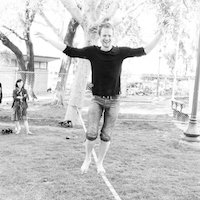
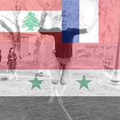

Welcome to Allg
This is a very simple app that will add an overlay of a French, Lebanese, and Syrian flag onto your facebook profile photo
Before:

After:

Step 1: Click on your profile photo on your Facebook page
Step 2: Click Options and click Download
Step 3: Back on this page, click "Choose File" and navigate to where you downloaded your facebook profile
Step 4: Right click on the new photo and click "save as"
Step 4: Upload the new photo as your Facebook profile pic